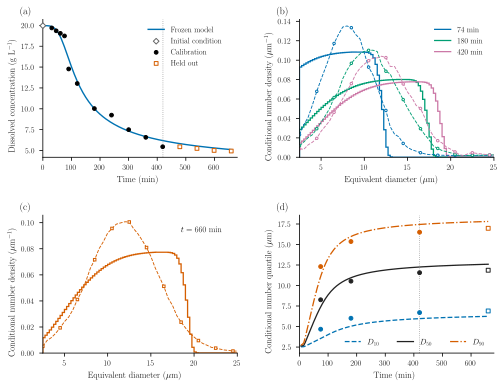
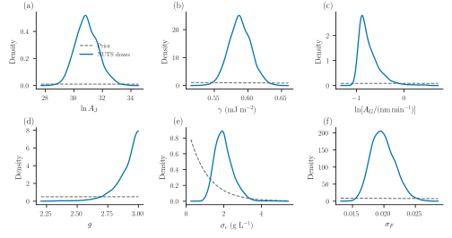
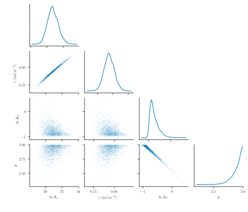

Inferring protein crystallization kinetics
How much can dissolved concentration and crystal-size distributions tell us about nucleation and growth? This example assembles an initially unseeded, isothermal lysozyme batch, estimates four kinetic parameters jointly, and predicts observations withheld from calibration.
Data
The observations are the original 100 mL experiment at 20 °C from Tang et al. (2018), Figures 11(d) and 12(a). The supplied graph readings are unchanged. Concentrations are in g/L and sizes are microscopy equivalent diameters in μm.
| Observations | Use |
|---|---|
| Initial concentration, 19.96584 g/L | Fixed initial condition at model time zero |
| Eleven subsequent concentrations | Calibration |
| Conditional number distributions at 74, 180 and 420 min | Calibration |
| Four later concentrations and the 660-min distribution | Held-out prediction |
The distributions are conditioned on 2.5–25 μm. Their reconstructed 0.5 μm ordinates are neither raw particle counts nor independent measurements. Diagnostic quantiles are derived from these curves and are not fitted again. The data directory retains the original readings, time labels and digitization provenance.
Model
Let $n(L,t)$ be number density per unit process volume and particle length. With no aggregation or breakage,
\[\frac{\partial n(L,t)}{\partial t} +\frac{\partial [G(c(t))n(L,t)]}{\partial L}=0, \qquad G(c(t))n(0,t)=J(c(t)),\qquad n(L,0)=0.\]
Classical nucleation theory (CNT) makes nucleation fall rapidly as dissolved protein is consumed. We use the CNT/empirical-growth combination in Mitchell et al. (2023), Case 3, equations (3) and (9):
\[S=\frac{c}{c_*},\qquad J=A_J\exp\!\left[-\frac{16\pi\gamma^3\nu^2} {3(k_{\mathrm B}T)^3(\ln S)^2}\right],\qquad G=A_G(S-1)^g.\]
Both rates are zero for $S\leq1$. Growth is independent of particle size. Temperature is fixed at 293.15 K, so the growth Arrhenius factor is absorbed into $A_G$. There is no extra supersaturation prefactor in the CNT law. This is the same kinetic form as Mitchell's Case 3; the observations and observation model here differ from that paper's parameter-estimation exercise.
The code accepts $\gamma$ in mJ/m², $A_J$ in particles/(m³ s), and $A_G$ in nm/min. It follows the growth units printed in Mitchell's parameter-estimation Tables 3, 5 and 7; Table 2 instead lists μm/min. The conversion to min and μm is explicit in the code. Molecular volume is fixed at $\nu=2.97\times10^{-26}$ m³/molecule, as used by Lin et al. (2017). Only the combination $\gamma^3\nu^2$ enters the CNT barrier, so the inferred surface energy is conditional on this molecular-volume convention. Nominal solubility $c_*=2.16$ g/L, density $\rho=1240$ kg/m³ and shape factor $k_v=0.81$ are conditional modelling assumptions, not fitted quantities.
In SI length units, dissolved material and crystals share the balance
\[\frac{\mathrm dc}{\mathrm dt} =-\rho k_v\frac{\mathrm d}{\mathrm dt} \int_0^\infty L^3n(L,t)\,\mathrm dL.\]
Concentrations in g/L equal kg/m³. Internally, lengths are in μm and bin populations are divided by $10^{12}$; the discrete solid concentration is $10^{-6}\rho k_v\sum_iL_i^3N_i$. The bulk callback uses the same stage's population derivative, so the discrete total is conserved without lagging solute exchange. This conservation statement does not establish grid accuracy.
The essential package assembly is:
include("examples/isothermal_protein_crystallization.jl")
using PopulationBalanceModels, .IsothermalProteinCrystallization
p = parameters(logAJ=41.0, gamma=0.76, AG=1.0, g=2.4)
problem = build(bins=200, p=p) # empty population and one dissolved state
solution = cfl_solve(problem, [0.0, 74.0, 180.0, 420.0, 660.0])Inside build, the physical terms are declared directly:
growth_rate = IsothermalProteinCrystallization.growth_rate
nucleation_rate = IsothermalProteinCrystallization.nucleation_rate
model = PBMModel(
growth = Growth(PolynomialRate(((p,t,ctx) -> growth_rate(p,ctx.bulk.c),))),
primary = Nucleation(rate=(p,t,ctx) -> nucleation_rate(p,ctx.bulk.c)/1e12,
size=0.0),
)
methods = TermMethods(growth=MUSCL(), by_term=(primary=BoundaryInjection(:left),))The degree-zero polynomial declares size-independent growth while allowing current dissolved concentration to change its rate. The actual example keeps these rate functions inside its module. BoundaryInjection(:left) inserts the nucleation number flux once. MUSCL and native SSPRK33 advance the bin integrals. Boundary births enter the first bin; their discrete material uses the same centre-cubed weight as the bulk exchange and vanishes with grid refinement. The upper boundary is closed on the 0–50 μm domain; upper-bin occupancy and a 75 μm domain check must confirm that it is inactive. No seeds or normalization floors are added. An empty predicted observation window is an invalid likelihood evaluation.
Bayesian estimation
Concentration uses a Gaussian likelihood with inferred scale $\sigma_c$. Each calibration distribution contributes one correlated CDF block:
\[F_\theta(L,t)=\frac{\int_{2.5}^{L}n(\ell,t)\,\mathrm d\ell} {\int_{2.5}^{25}n(\ell,t)\,\mathrm d\ell},\qquad \mathbf F_{\rm obs}(t)\sim\mathcal N(\mathbf F_\theta(t),\sigma_F^2R), \qquad R_{ij}=\exp\!\left(-\frac{|L_i-L_j|}{2\,\mu\mathrm m}\right).\]
We evaluate 22 interior ordinates at 1 μm spacing; the fixed endpoints are excluded. PopulationCDF integrates partial grid cells and normalizes over the stated window. The Gaussian CDF discrepancy and its 2 μm correlation length are explicit observation-model assumptions. They do not recover an unknown microscope sample count or a measured instrument covariance. Likelihood normalization is retained when estimating both scales. The code factorizes the fixed correlation matrix once and whitens observations and predictions through Measurement.response. The normalized Gaussian likelihood is evaluated in these whitened coordinates. Its density differs from the original-CDF density by a known, parameter-independent determinant; the MAP export records that conversion and the posterior is unchanged.
Mitchell's Table 3 gives initial search ranges, not Bayesian prior distributions. We use them to inform the following declared priors. We do not use that paper's final estimates from the same experiment as independent prior information.
| Parameter | Prior | Interpretation/source |
|---|---|---|
| $\ln A_J$ | Uniform(0, 100) | Table 3's broad initial bounds |
| $\gamma$ (mJ/m²) | LogNormal(log(0.64), 0.7) | Table 3's 0.64 value; log width is our assumption |
| $\ln[A_G/(\mathrm{nm/min})]$ | Uniform(log(0.01), log(1500)) | Broad log-uniform growth scale |
| $g$ | Uniform(1, 3) | Table 3's initial exponent range |
| $\sigma_c$ (g/L) | Exponential(mean 1) | Inferred concentration discrepancy |
| $\sigma_F$ | Exponential(mean 0.1) | Inferred dimensionless CDF discrepancy |
Table 3's initial growth range, 600–1500 nm/min, excludes even the paper's final fitted coefficient. Treating it as hard prior support would rule out much slower growth in advance. We therefore extend its lower bound to 0.01 nm/min and state that choice explicitly.
The example defines Measurement blocks and an InferenceExperiment, then uses the package's shared posterior for MAP, optional Laplace and NUTS:
using Optim
estimation = estimation_problem(bins=200)
map = IsothermalProteinCrystallization.fit_model(estimation) # three starts
map.converged || error("Inspect optimizer diagnostics")
physical_parameters(estimation, map.minimizer, :batch)Positive parameters use logarithmic coordinates; bounded parameters use logit coordinates. The prior Jacobian is included exactly once. The reported MAP is a mode in these inference coordinates, transformed to physical values. Optional NUTS uses initial log-rate coordinates to reduce coefficient correlation while preserving this posterior. Its starting metric comes from noise-scaled prediction sensitivities and expected Gaussian information. It is sampler tuning, not a verified posterior covariance. The retained diagnostic report determines whether draws may supply posterior summaries or predictive bands. A failed Laplace verification is reported rather than repaired.
Fits and held-out prediction

Solid curves are the CNT MAP prediction; dashed density curves and sparse markers are the supplied observations. Concentration and the three earlier number distributions calibrate jointly. Open squares and the complete 660-min distribution are held out. Panel (d) shows signed CDF residuals, making shape errors visible even when quantiles look reasonable. A CDF difference of 0.03 means three percentage points of the conditional number fraction. The conditional densities integrate to one over 2.5–25 μm; they do not measure absolute particle number. A concentration band, when present, summarizes latent NUTS predictions and excludes additional observation noise.
The MAP concentration RMSE is 1.96 g/L on calibration and 0.31 g/L on held-out observations. Distribution $W_2$ distances are 1.19, 0.86 and 0.85 μm at the calibration times, and 0.87 μm at 660 min. These distances describe distribution discrepancy; they are not likelihood standard deviations. The early concentration plateau/drop remains poorly captured. The steep upper edges in the computed densities have a physical origin within this idealized model: with births starting at zero and the same growth rate for every particle, the oldest particles reach only $L_{\max}(t)=\int_0^t G(c(s))\,\mathrm ds$. The numerical method broadens this finite-age front; refining the grid does not supply the measured long tail. These edges are well inside the inactive 50 μm computational boundary.
The retained CSVs report individual concentration and CDF residuals and diagnostic Wasserstein distances separately for calibration and prediction. CNT can produce a nucleation burst as supersaturation falls, but changing the rate law is not evidence of adequate agreement. The remaining concentration and shape residuals must be judged alongside the inferred discrepancy scales.


The corner plot shows actual joint draws and smoothed marginals; nuisance scales are integrated over, not fixed at their MAP values. Correlation ridges show how coefficients and the barrier/exponent can compensate. The growth exponent posterior accumulates near the chosen upper prior bound, $g=3$. That bound influences the inference: this is not evidence for a precisely identified universal exponent, or for a model that explains every measured shape. A wider range would be a different declared prior analysis.
The central 95% posterior intervals below use the retained NUTS draws. They include uncertainty in both discrepancy scales and are conditional on the model, priors, fixed inputs and mesh.
| Quantity | MAP | Posterior median | Central 95% interval |
|---|---|---|---|
| $\ln A_J$ | 30.848 | 30.863 | 29.446–32.596 |
| $\gamma$ (mJ/m²) | 0.5872 | 0.5877 | 0.5571–0.6218 |
| $A_G$ (nm/min) | 0.4834 | 0.4482 | 0.3758–0.8363 |
| $g$ | 2.890 | 2.927 | 2.629–2.997 |
| $\sigma_c$ (g/L) | 1.889 | 1.951 | 1.233–3.099 |
| $\sigma_F$ | 0.01908 | 0.01969 | 0.01664–0.02395 |
All four chains pass the declared screen: maximum rank $\widehat R=1.0049$, minimum bulk/tail ESS 886/879, no retained divergences or depth-limit hits. The correlations are 0.995 between $\ln A_J$ and $\gamma$, and −0.989 between $\ln A_G$ and $g$. These compensations remain important despite successful chain mixing.
Prior and posterior curves use the labelled parameter coordinates. The display zooms to the posterior region; the table above gives full prior support. Coefficient–barrier and coefficient–exponent trade-offs remain possible. Good chain diagnostics do not establish identifiability, numerical convergence or physical validity. These are conditional kinetic estimates: digitization, fixed solubility and molecular volume, diameter-to-length mapping, uncertain detection and sparse observation times still limit interpretation.
Run it
From the repository root:
julia --project=paper paper/setup.jl
julia --project=paper paper/case_studies/04_protein_crystallization/run.jl --smoke
julia --project=paper paper/case_studies/04_protein_crystallization/run.jl
# Optional posterior sampling through the same statistical model:
julia --project=paper paper/case_studies/04_protein_crystallization/run.jl --sample
python paper/plot_all.py --case 4
python paper/check_protein.pyThe default production command fits and predicts without waiting for MCMC. The sampling command uses 300 warmup and 500 retained draws in each of four chains; its diagnostic screen, rather than this budget alone, determines whether posterior plots and prediction bands are exported. The example contains the model and Bayesian definitions; the existing paper entry point handles export. Results record the checkout, dirty state, data/source hashes, solver settings, optimizer diagnostics, conservation and independent temporal, size-grid and domain checks. Validation is never used to choose the fit. Reducing the maximum timestep from 2 to 0.1 min changes calibration CDFs by at most $1.54\times10^{-5}$. Doubling to 400 bins changes them by up to 0.0078 at fixed parameters; a calibration-only refined refit changes predictions by up to 0.166 g/L and 0.0101 in CDF. Extending the domain to 75 μm at unchanged bin width has no observed effect. The material residual is below $6\times10^{-13}$ g/L, with negligible upper-bin occupancy. Spatial error therefore remains more relevant than time or domain error; posterior summaries are conditional on the stated 200-bin discretization. Selected posterior-draw refinement checks are exported separately: the four tested rate/barrier extremes change CDFs by at most 0.0084 on doubling the grid, and have no observed domain effect.
The older Mitchell-based example remains a historical audit reproduction; its posterior and adequacy findings are separate from this calculation.